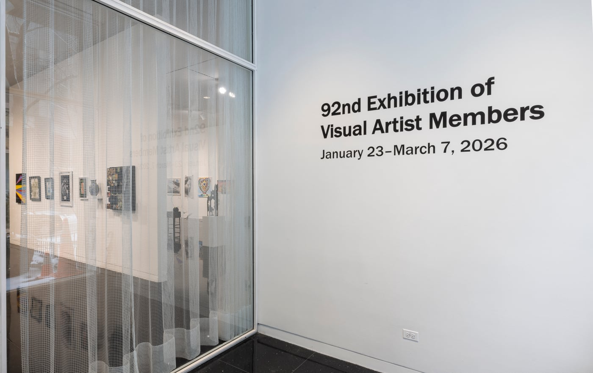
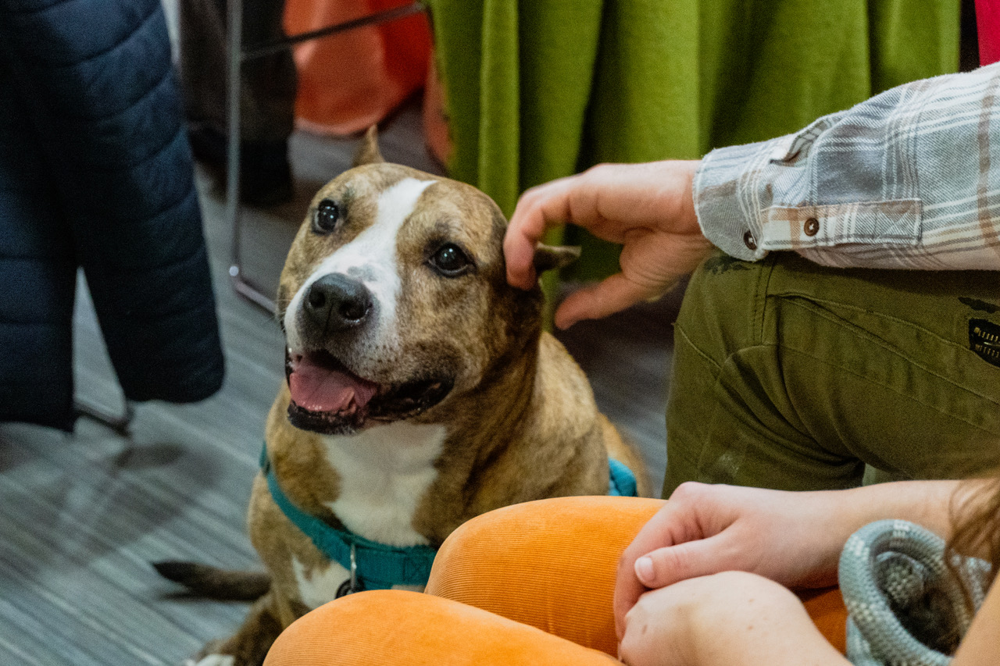
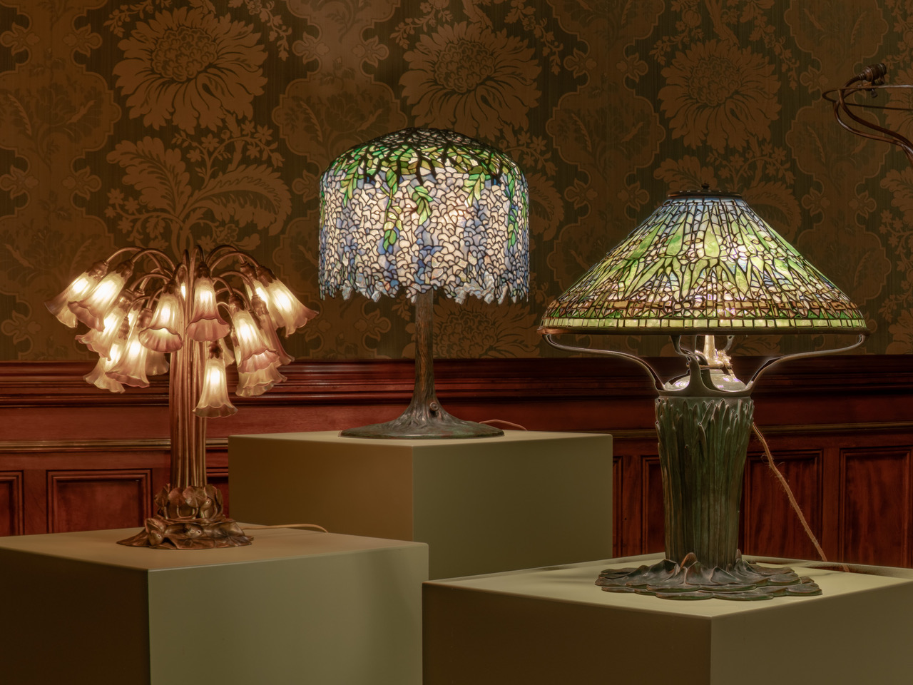
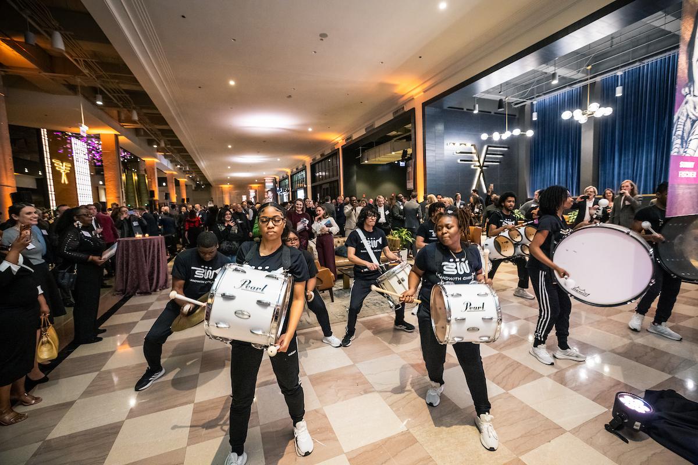
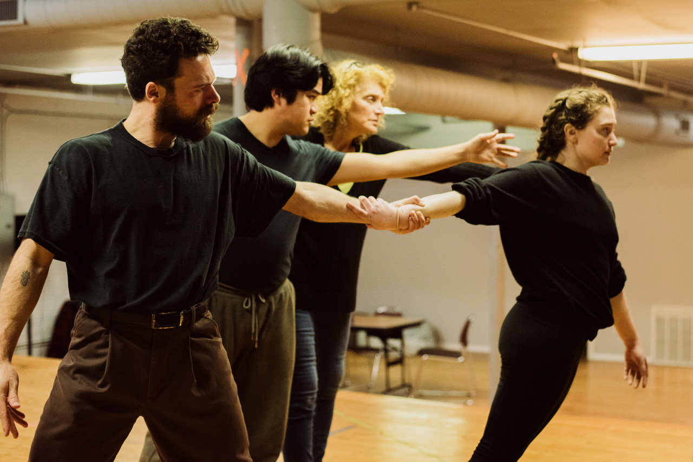
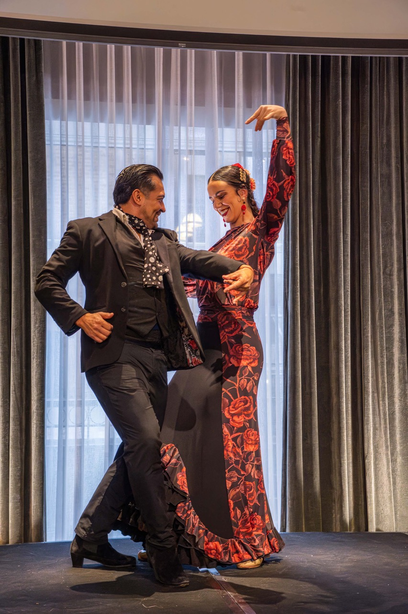

Classic Chicago Magazine is a weekly digital publication celebrating the people, places, culture, and style that make Chicago one of the world's great cities. Published every Sunday, each edition brings together original writing, photography, and reporting from voices who know and love this city.
We believe Chicago deserves a magazine that reflects its depth — its world-class dining, its storied neighborhoods, its vibrant arts scene, and the remarkable people who call it home. Classic Chicago tells the stories that matter to those who care deeply about this city, past and present.
From the best restaurants on Halsted Street to hidden gardens in Wicker Park, from galas on the Gold Coast to boba tea in Chinatown — our writers explore every corner of Chicago life. Regular features include dining guides, social coverage, neighborhood profiles, travel writing, and cultural commentary.
A veteran Chicago journalist covering dining, social events, and the people who shape the city’s cultural life. She is the author of Murray Bay: The Gilded Age Resort of Tafts, Sedgwicks, Blakes, Minturns, and Their Friends and co-author of Charlevoix: A Tradition of Hospitality.
 Children's Research Fund Children's Ball
February 15, 2026
Bag Charms: Humor and Play in a Serious World
February 22, 2026
IWA's Women Extraordinaire
February 22, 2026
Children's Research Fund Children's Ball
February 15, 2026
Bag Charms: Humor and Play in a Serious World
February 22, 2026
IWA's Women Extraordinaire
February 22, 2026

Chicago's Vanguard: Inside the 92nd Arts Club Members Show March 1, 2026
Taffy and Pretty Girl Celebrate Anti-Cruelty's 127th Birthday March 15, 2026 Even an 11th Hour Site Change Didn't Stop the ICA
March 15, 2026
Jessie Mueller: Evanston Tony Winner Sings For Season of Concern
March 22, 2026
Building Blocks: A Legacy to a Chicago Icon
March 22, 2026
Even an 11th Hour Site Change Didn't Stop the ICA
March 15, 2026
Jessie Mueller: Evanston Tony Winner Sings For Season of Concern
March 22, 2026
Building Blocks: A Legacy to a Chicago Icon
March 22, 2026

Tiffany at the Driehaus Museum: Chicago Can’t Get Enough March 29, 2026
Landmarks Illinois Delivers at The Old Post Office March 29, 2026 Lyric Opera: Madama Butterfly and Virtual Reality
April 5, 2026
Lyric Opera: Madama Butterfly and Virtual Reality
April 5, 2026

Concentration: A Poet’s Imagined Voice Now a Powerful Play April 5, 2026
IWA Women Extraordinaire Awards Luncheon April 5, 2026 Joyspan: How to Thrive in Life’s Second Half
April 12, 2026
Joyspan: How to Thrive in Life’s Second Half
April 12, 2026
A noted social historian, she is the author of The Magnificent Medills.
A veteran Chicago journalist covering dining, social events, and the people who shape the city’s cultural life. Judy studies silent films with a particular interest in learning about pioneering women filmmakers.
Biba Roesch who writes monthly about her favorite things, has been a Chicago favorite to so many. A leader in the concierge field and a member of cultural boards such as Facets, her knowledge of Chicago and Palm Springs people and places is legendary.
Monthly author of “My Silk Roads”, Susan Aurinko is a photographic artist and independent curator who also enjoys writing and reviewing. Enjoy her website at lensflaireditions.com.
Born in Rome and raised in Umbria, Francesco Bianchini teaches French language and culture at the University of Perugia and writes from between Italy and France. His work explores memory, place, food, travel, and the quiet rituals that shape a life.
David A. F. Sweet is the author of Three Seconds in Munich: The Controversial 1972 Olympic Basketball Final, Lamar Hunt: The Gentle Giant Who Revolutionized Professional Sports, Onwentsia at 125, and Elawa Farm: A Timeless Treasure. Reach him at dafsweet@aol.com.
Sigalit Zetouni is a Chicago-based arts and culture writer whose work explores the people, ideas, and creative forces shaping the city and the wider world.
Linda P. Miller served as President of the Board of Friends of Historic Second Church from 2010 through 2025. She remains on the Board of Friends and continues to share her passion for preserving this magnificent building with the world.
A senior at the University of Illinois at Chicago and an intern at Classic Chicago, Jackson has takes interest in Chicago history, indie films and the music scene which have been explored in his fine articles.
Have a story idea, want to contribute, or just want to say hello? We'd love to hear from you. Reach us at editor@classicchicagomagazine.com.
Interested in advertising? Visit our advertising page for rates and opportunities.